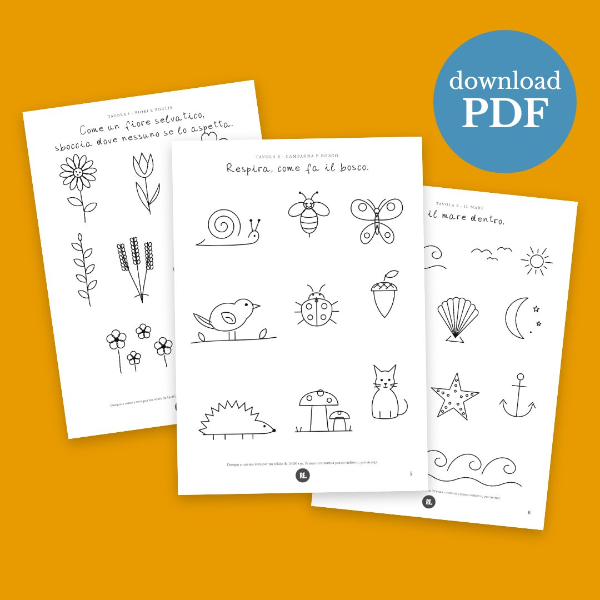
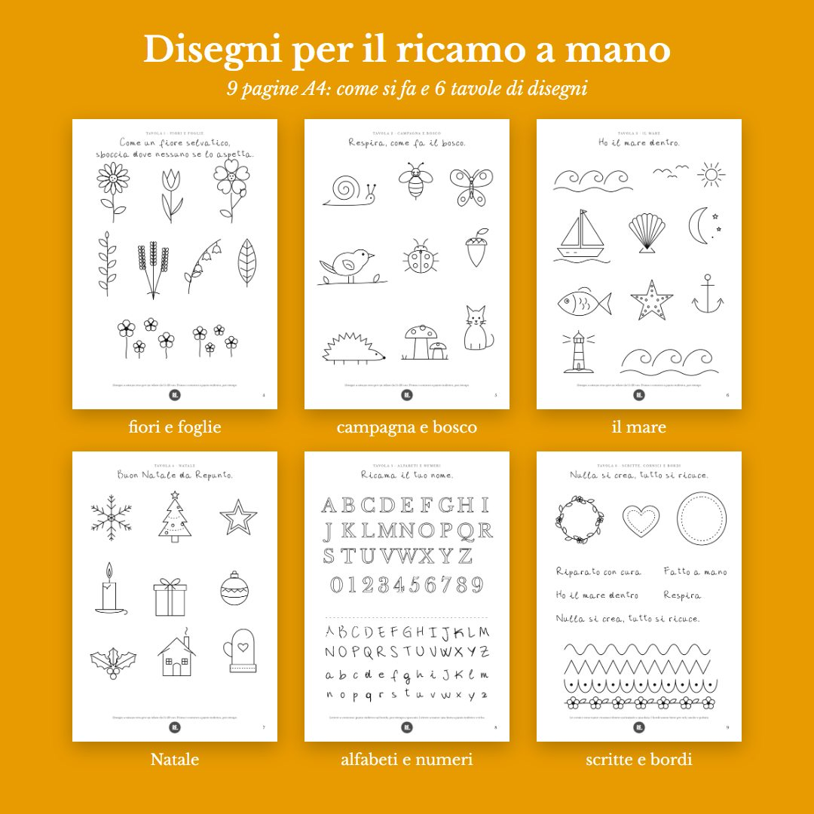

Disegni per il ricamo, pronti da ricalcare
Fiori, animali di campagna, il mare, il Natale, due alfabeti, scritte e bordi: disegni a linee chiare da portare su una federa, un tovagliolo, una camicia di cotone o di lino.
PDF di 9 pagine A4: come si fa e 6 tavole · si scarica subito dopo il pagamento

Sei tavole da ricamare
- Fiori e foglie: margherita, tulipano, lavanda, campanule, un ramo
- Campagna e bosco: chiocciola, ape, farfalla, coccinella, uccellino, riccio, funghi, gatto
- Il mare: onde, barca a vela, conchiglia, stella marina, pesce, àncora, faro, luna
- Natale: fiocco di neve, albero, candela, pacchetto, pallina, agrifoglio, casetta, muffola
- Due alfabeti e i numeri, per ricamare un nome o una data
- Scritte, cornici e bordi per orli, tasche e polsini
Nelle prime tre pagine: come ricalcare il disegno in controluce o stamparlo su carta idrosolubile, e come ricamarlo, con le foto dei punti.

I punti base del ricamo, su YouTube
Prima tutti i contorni a punto indietro, poi le parti interne a punto erba o spaccato, e i nodini per occhi e puntini. Li spiego uno per uno nel video gratuito sul canale di Repunto.
Guarda il tutorial dei punti base →
Come porto il disegno sul tessuto?
Due modi, spiegati passo passo nel PDF: metti il foglio su una finestra luminosa, ci appoggi sopra un tessuto di cotone o lino chiaro e ricalchi il disegno con una matita; oppure stampi la tavola su carta idrosolubile, la attacchi al tessuto, ricami sopra e la sciogli nell'acqua.
Sono adatti a chi comincia?
Sì, sono disegni a linee semplici. Se hai già provato e vuoi qualcosa di più ricco, c'è il livello 2, Onirico.
Come ricevo il PDF?
Dopo il pagamento si apre la pagina con il pulsante per scaricare il PDF, e ti arriva un'email con lo stesso link, valido 30 giorni.